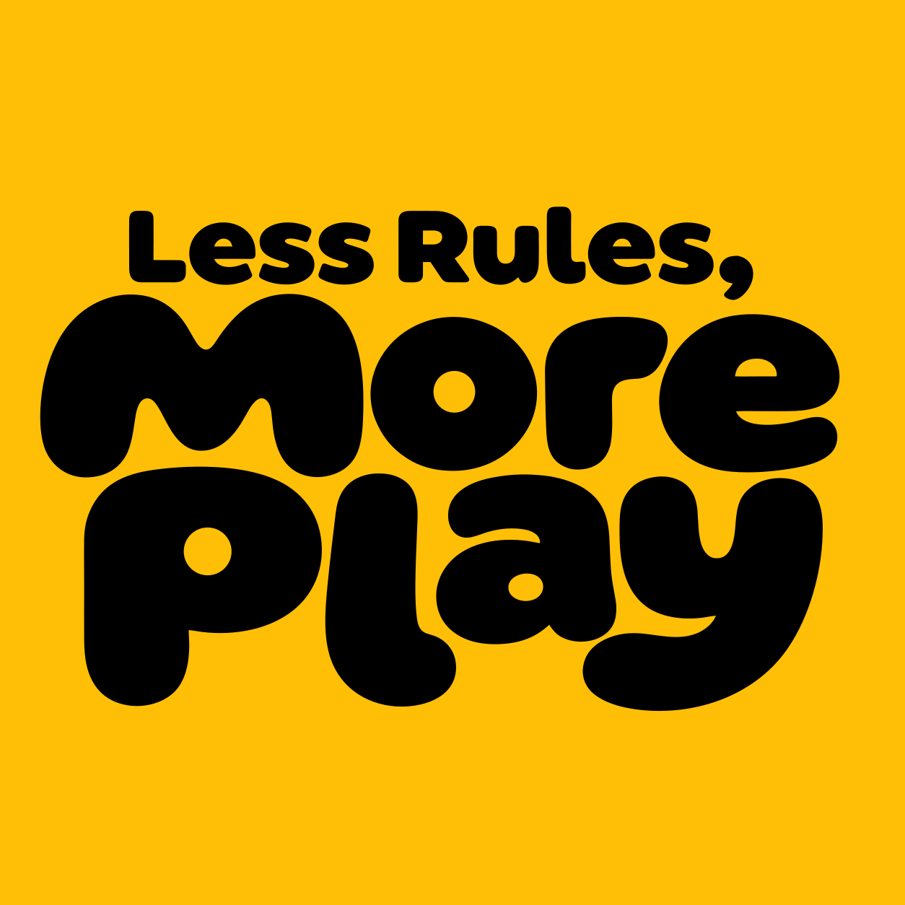

Puerto Rico 1897
Learn the rulesBased on the English rulebook (2023 corrected edition)
A guide for teaching the game at the table in about ten short screens, plus a quick reminder of what hasn't been explained yet and will need to be later.